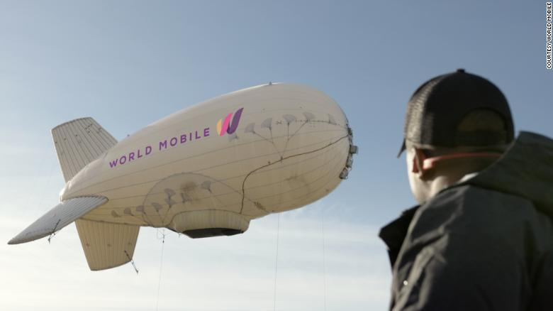

Internet blimps are coming to Zanzibar. But can a UK company succeed where Google failed?
(CNN)The Tanzanian islands of Zanzibar and Pemba are about to become a test site for a mobile internet network its creators hope will not just revolutionize lives there, but possibly across sub-Saharan Africa and beyond.  Only around 20% of Tanzanians use the internet, according to the World Bank. That's low, even for sub-Saharan Africa where usage is affected by limited internet coverage and compounded by high data costs and low digital literacy. However, change could soon be written in the sky. UK company World Mobile is launching a hybrid network using aerostats -- blimp-like tethered balloons that it says will provide near-blanket coverage across the islands. Two solar-powered, helium-filled balloons will float 300 meters (984 feet) above land and have a broadcast range of around 70 kilometers (44 miles) apiece, using 3G and 4G frequencies to deliver their signal. The balloons can survive winds of up to 150 kilometers per hour (93 miles per hour) and stay airborne for up to 14 days before descending for refilling. In the few hours of downtime, other aerostats will be airborne, ensuring users are never without service, says the company. Read: Kenya Airways converted two 787 Dreamliners to carry cargo The signal from an aerostat -- used as a low altitude platform station (LAPS) -- is sufficient for tasks like internet browsing and email, says World Mobile. Meanwhile, construction is underway for a network of nodes on the ground, each able to provide WiFi for hundreds of people with speeds sufficient for video streaming and gaming. The network comprising 125 locations is scheduled for completion this year and the first balloon will launch in June.